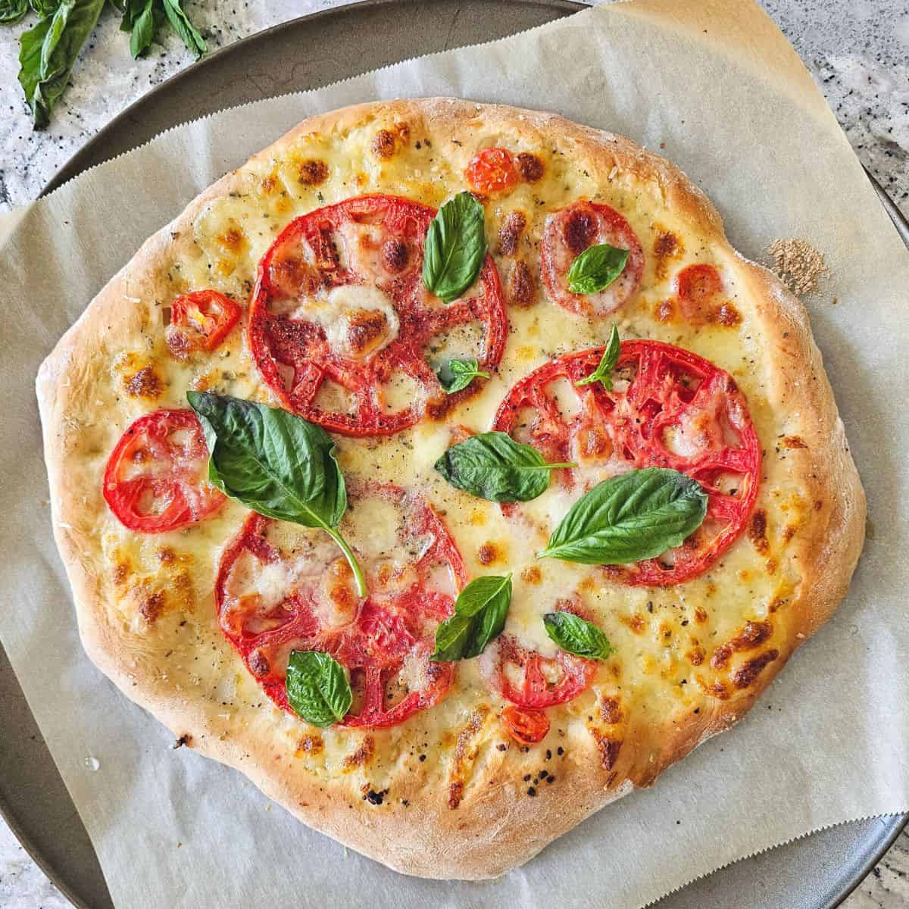

Home
Basil Tomato Pizza

Description
This recipe has been passed down through the generations within my family and continues to prove again and again
why Italians are the best pizza artists out there. Such a simple dish, but yet so much flavor. This recipe may just
ruin every other pizza out there that you've had so far in your lifetime. Yes! It's that good!
Ingredients
- 1 tablespoon yellow cornmeal
- Two 8-ounce pieces of homemade or purchased Pizza Dough, recipe follows
- 6 teaspoons extra-virgin olive oil
- 1 1/3 cups, grated pasteurized mozzarella
- 2 Roma tomatoes, cut crosswise into 1/4-inch-thick slices
- 1/4 cup grated Parmesan
- 1 large garlic clove, minced, optional
- 6 fresh basil leaves, plus extra for garnish
- 1/2 teaspoon salt
- 1/2 cup warm water (105 to 110 degrees F)
- 2 teaspoons dry yeast
- 2 cups all-purpose flour
- 1 teaspoon salt
- 3 tablespoons olive oil
Steps
- Position 1 oven rack in the center and the second rack on the bottom of the oven and preheat to 450
degrees F. Sprinkle the cornmeal over 2 rimless baking sheets. Roll out each piece of Pizza Dough
into a 10 to 11-inch-diameter round. Transfer 1 dough to each prepared baking sheet.
- Drizzle 2 teaspoons of oil over each Pizza Dough. Sprinkle the mozzarella over the Pizza Dough,
dividing equaling and leaving a 1-inch border around each pizza. Arrange the tomato slices in a
single layer over the cheese. Sprinkle with the Parmesan. Arrange basil leaves on top, drizzle
with a little more olive oil and sprinkle garlic all over. Bake the pizzas until the crusts are
crisp and brown on the bottom and the cheese is melted on top, about 15 minutes.
Drizzle 1 teaspoon of oil over each pizza. Sprinkle with basil for garnish and salt.
Cut the pizza into wedges and serve immediately.
- Mix the warm water and yeast in a small bowl to blend. Let stand until the yeast dissolves,
about 5 minutes. Mix the flour and salt in a food processor to blend. Blend in the oil. With
the machine running, add the yeast mixture and blend just until the dough forms. Turn the dough
out onto lightly floured surface and knead until smooth, about 1 minute. Transfer the dough to a
large oiled bowl and turn the dough to coat with the oil. Cover the bowl with plastic wrap and set
aside in a warm draft-free area until the dough doubles in volume, about 1 hour. Punch the down dough
and divide into 2 equal balls. (The dough can be used immediately or stored airtight in the refrigerator
for 1 day.)